scripts/_common.py、
Results/Independent_Audit_20260819/audit_recalc_N100.py と数値一致）。commit e7b8de9。
主評価項目 = 1ストライド全体の最大 lMtilde（=lM/lMo）。N=100 を主解析、N=50 は主結果に混在させない。
数値照合は 01_numeric_reconciliation.csv（27行・不一致0）、自動QAは qa/qa_results.csv（20項目 PASS）。
Fce は減衰項を含む収縮要素力。前傾量 A = -pelvis_tilt。
目的 / Purpose: 観察研究に加えて、同一予測モデル内で接地時骨盤傾斜を操作する必要性と、解析の連鎖を示す。 Why a single-model predictive manipulation of touchdown pelvic tilt is needed, and how the analyses chain.
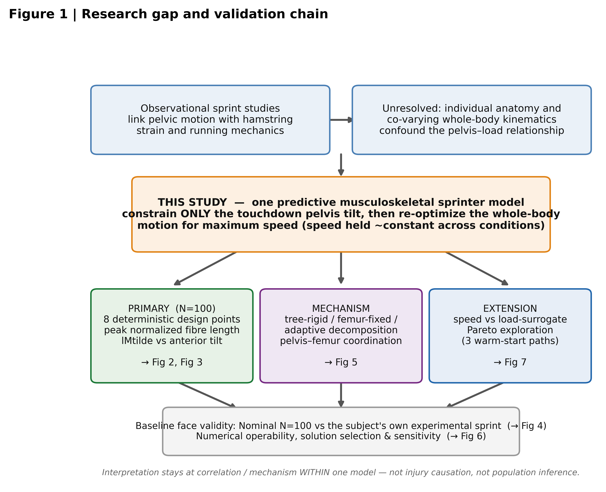
結果（事実のみ） / Results (facts only): 概念図。観察研究の交絡（個体差・共変動学）を、単一モデルで接地時骨盤傾斜のみ拘束し全身再最適化することで切り分ける枠組み。
Caption (EN): Schematic. Observational confounds (anatomy, co-varying kinematics) are isolated by constraining only touchdown pelvis tilt in one model and re-optimizing the whole body.
図注 (JP): 概念図。観察研究の交絡を、単一モデルで接地時骨盤傾斜のみ拘束・全身再最適化して切り分け、主解析／機序／発展解析へ連鎖させる。
目的 / Purpose: 速度をほぼ維持した条件間で、接地前傾量の増加が二関節ハムの1ストライド最大 lMtilde 増加と関連するか。
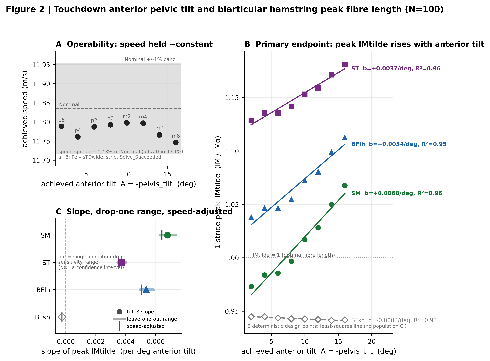
結果（事実のみ） / Results (facts only): 速度は Nominal ±1% 内（スプレッド 0.43%）。1ストライド最大 lMtilde の前傾1°当たり傾きは SM +0.0068（R²0.96）, ST +0.0037（R²0.96）, BFlh +0.0054（R²0.95）, BFsh -0.0003（ほぼ平坦）。最小→最大前傾で二関節3筋 +4.7…+9.7%, BFsh -0.3%。
Caption (EN): A: operability (speed within Nominal +/-1%). B: 1-stride peak lMtilde rises graded with anterior tilt for the three biarticular muscles; biceps femoris short head (single-joint) is flat. C: slope with leave-one-condition-out range (NOT a CI) and speed-adjusted coefficient. 8 deterministic design points; no population CI.
図注 (JP): A: 操作成立性（速度は Nominal ±1% 内）。B: 1ストライド最大 lMtilde は二関節3筋で前傾量とともに段階的に増加、単関節 BFsh は平坦。C: 傾き＋単一条件除外感度範囲（CIではない）＋速度調整係数。8決定論的設計点、母集団CIなし。
目的 / Purpose: 1ストライド最大 lMtilde はどの局面でどのように前傾量へ応答するか。
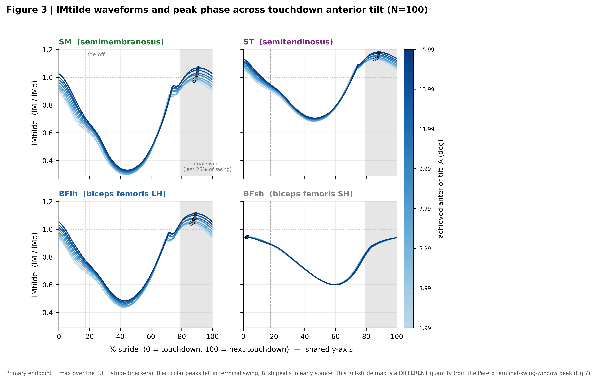
結果（事実のみ） / Results (facts only): 二関節3筋の1ストライド最大は結果として終末遊脚期（85.5–90.8% stride）に位置し、前傾量とともに段階的に上昇。BFsh は早期立脚（~2–3%）にピークをもち平坦。主評価は1ストライド全体の最大値であり、Pareto の terminal-swing-window peak とは別定義。
Caption (EN): lMtilde vs % stride for the 8 conditions, coloured by anterior tilt (darker = larger). Markers = 1-stride max (full stride), which lands in terminal swing for the biarticular muscles. Distinct from the Pareto TS-window peak.
図注 (JP): 8条件の lMtilde 波形（濃色=前傾大）。marker=1ストライド最大（全ストライド）で、二関節筋では終末遊脚期に位置。Pareto の TS窓ピークとは別量。
目的 / Purpose: 内部筋力学を論じる前提として、Nominal N=100 は被験者本人の最高速度スプリントの外部特徴をどの程度再現するか。
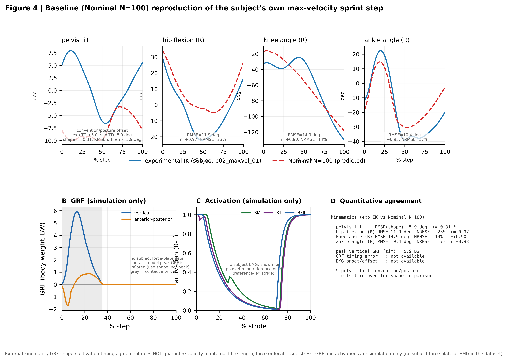
結果（事実のみ） / Results (facts only): 股・膝・足の関節角は形状一致良好（相関 r=0.90–0.97, 系統オフセット有）。pelvis_tilt は raw IK とモデルで規約/姿勢が異なり （接地 +5.0° vs −8.0°）、オフセット除去後の形状相関 r=−0.31・RMSE 5.9°。被験者の実験 GRF・EMG は本データに無く、GRF/活動は**シミュレーションのみ**（鉛直ピーク 5.9BW は接触モデル由来で過大）。GRF/EMG 誤差は not available。
Caption (EN): Kinematic shape agreement (hip/knee/ankle r=0.90-0.97) with systematic offsets; pelvis_tilt differs by a convention/posture offset (flagged, not silently aligned). GRF and activations are SIMULATION-ONLY (no subject force plate or EMG in the dataset). External agreement does NOT guarantee internal fibre-length/force validity.
図注 (JP): 運動学の形状一致（股膝足 r=0.90–0.97, オフセット有）。pelvis_tilt は規約/姿勢差を注記。GRF・活動はシミュレーションのみ。外部一致は内部筋線維長・力の妥当性を保証しない。
目的 / Purpose: 観察されたハム伸長は骨盤絶対角ではなく骨盤–大腿の相対配置で説明されるか。
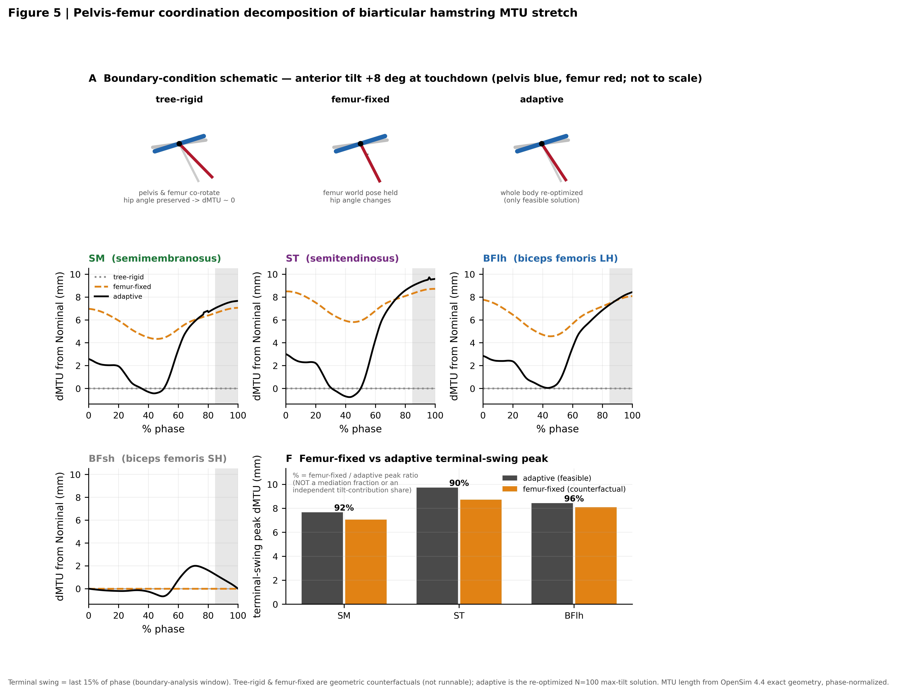
結果（事実のみ） / Results (facts only): 正規化位相・OpenSim厳密MTUで、adaptive の終末遊脚期 ΔMTU は SM 7.666 / ST 9.727 / BFlh 8.435 mm。大腿世界姿勢を固定した femur-fixed が adaptive の 95.84–92.09% を再現（骨盤と共回転する tree-rigid は ΔMTU≈0）。この比は媒介割合ではない。
Caption (EN): tree-rigid (pelvis & femur co-rotate) gives dMTU~0; femur-fixed (femur world pose held) reproduces 89.6-95.8% of the adaptive terminal-swing MTU rise. A/B are geometric counterfactuals; only adaptive is feasible. The ratio is NOT a mediation fraction.
図注 (JP): tree-rigid（骨盤・大腿共回転）で ΔMTU≈0、femur-fixed（大腿世界姿勢固定）が adaptive の 89.6–95.8% を再現。A/B は幾何学的反実仮想、adaptive のみ実行可能解。比率は媒介割合ではない。
目的 / Purpose: 主結果は角度未達・制約違反・単一条件・速度差・成功解選択だけで説明されないか。
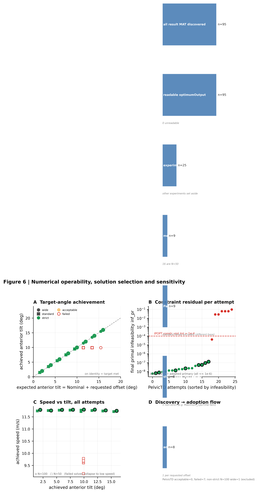
結果（事実のみ） / Results (facts only): 全95 MAT を発見→読込→PelvisTD→N=100→wide→strict の順に絞り、要求offsetごとに inf_pr 最小の8条件を採用。採用8条件は inf_pr ~1e-9…1e-7（≪1e-4）、失敗解は >1e-2 で低速へ崩壊。
Caption (EN): Discovery-to-adoption funnel (95 MAT -> 8 adopted). Target-angle achievement on identity; adopted inf_pr << 1e-4; failed solves collapse to low speed. Shows the result is not an artefact of unmet angle, constraint violation, or solution selection.
図注 (JP): 発見→採用のフロー（95→8）。目標角は identity 上、採用解の残差 ≪1e-4、失敗解は低速へ崩壊。角度未達・制約違反・解選択の 人工物でないことを示す。
目的 / Purpose: 速度損失を事前基準内に保ちつつ、筋線維長代理指標が低い候補解を計算上生成できるか。
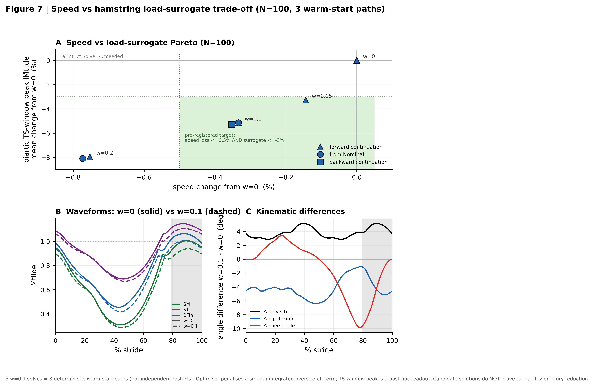
結果（事実のみ） / Results (facts only): w=0.1 の3ウォームスタート経路で平均 dSpeed -0.340%・dSurrogate（二関節TS窓ピーク平均）-5.189%。事前基準（速度損失≤0.5% かつ代理指標≤−3%）を w=0.05/0.10 が満たし、w=0.2 は速度予算超過。3解は独立反復でなく3決定論的経路。最適化が直接罰する平滑積分項と報告ピークは別指標。候補解は実走可能性・受傷低減を証明しない。
Caption (EN): w=0.1 (3 warm-start paths) reduces the biarticular terminal-swing-window peak surrogate by ~5.2% for ~0.34% speed loss; w=0.05/0.10 meet the pre-registered target, w=0.2 exceeds the speed budget. The 3 solves are deterministic warm-start paths, not independent restarts. Candidates do NOT prove runnability or injury reduction.
図注 (JP): w=0.1（3経路）で速度 −0.34% と引き換えに二関節TS窓ピーク代理指標 −5.2%。w=0.05/0.10 が事前基準を満たす。3解は決定論的経路。候補解は実走可能性・受傷低減を証明しない。
目的 / Purpose: 二関節ハムが力–長さ関係上のどこで作動し、前傾でどう移動するか。
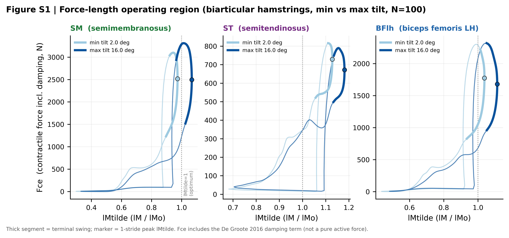
結果（事実のみ） / Results (facts only): 前傾大（m8）の終末遊脚期作用点は前傾小（p6）より長い lMtilde 側へ移動。Fce は減衰項を含む収縮要素力。
Caption (EN): Fce (incl. damping) vs lMtilde for min vs max tilt; the max-tilt terminal-swing operating point sits at longer lMtilde.
図注 (JP): min/max 前傾の Fce–lMtilde 軌跡。前傾大で終末遊脚の作用点が長 lMtilde 側へ。
目的 / Purpose: 各負荷代理指標が最小→最大前傾でどう変化するか。
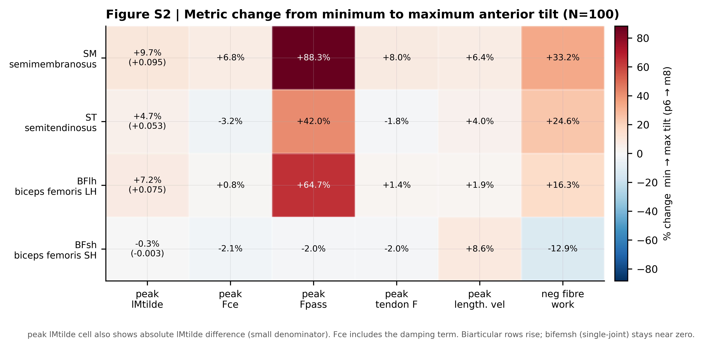
結果（事実のみ） / Results (facts only): 受動力 Fpass が最大の上昇（二関節 +42…+88%）、負の仕事 +16…+33%、最大 lMtilde +4.7…+9.7%。BFsh はほぼ中立/負。
Caption (EN): Percent change min->max tilt per metric; passive force rises most, biarticular metrics rise, bifemsh near zero.
図注 (JP): 最小→最大前傾の変化率。受動力が最大上昇、二関節指標が上昇、BFsh は中立。
目的 / Purpose: 基準ハムストリング作用点は筋腱パラメータ ±10% にどれだけ感度をもつか。
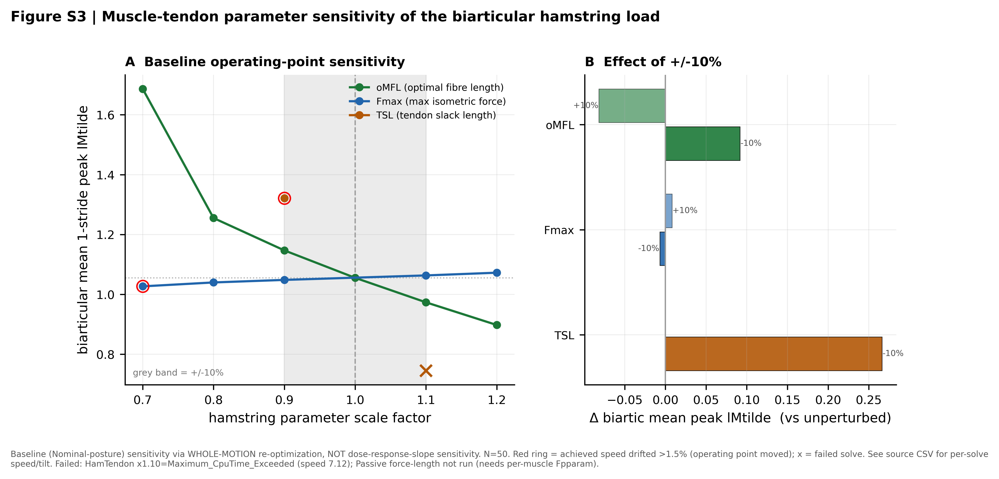
結果（事実のみ） / Results (facts only): 至適筋線維長 oMFL が支配的（−10%で二関節平均 peak lMtilde +0.092、+10%で -0.082）。最大等尺性筋力 Fmax は小（±10%で -0.007/+0.008）。腱自然長 TSL ±10%は +0.266/+nan。これは基準作用点の感度で、用量反応傾き自体の感度ではない。受動FLはモデルのper-muscle化が必要で未実施。
Caption (EN): Sensitivity of the baseline biarticular hamstring peak lMtilde to +/-10% muscle-tendon parameters (oMFL dominant; Fmax small; TSL if solved). Baseline operating-point sensitivity, not dose-response-slope sensitivity; passive force-length not run (needs per-muscle Fpparam).
図注 (JP): 基準二関節ハム peak lMtilde の ±10% 筋腱パラメータ感度。oMFL が支配的、Fmax は小。基準作用点の感度であり傾き感度ではない。受動FLは未実施。
目的 / Purpose: 接地前傾の用量反応はメッシュ解像度に頑健か（N=50 wide 対 N=100 wide、達成角で比較）。
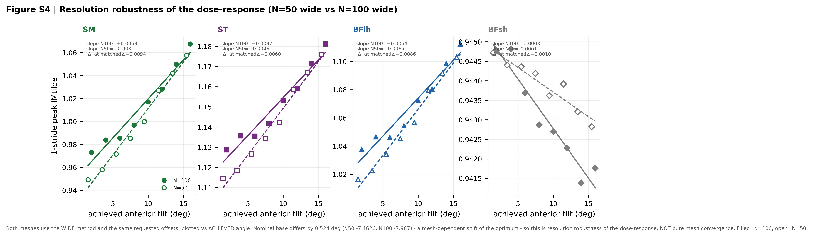
結果（事実のみ） / Results (facts only): 二関節3筋の用量反応は N=50 wide と N=100 wide の両メッシュで方向一致（正）、BFsh は平坦。傾きは N=50 が約20%急（例 SM: N100 +0.0068 vs N50 +0.0081/deg）。達成角一致での差 |Δ|≈0.009 lMtilde。基準の0.524°差はメッシュ効果で、純粋なmesh convergenceではない。
Caption (EN): N=50 wide vs N=100 wide dose-response at achieved touchdown angle. Qualitative direction robust; N=50 slope ~20% steeper. Base differs 0.524 deg (mesh-dependent optimum shift) -> resolution robustness, NOT pure mesh convergence. N=50 p2/p4/p6 were re-solved to complete the wide series.
図注 (JP): N=50/N=100 wide の用量反応を達成角で比較。方向は頑健、N=50 傾きは約20%急。基準0.524°差はメッシュ効果。純粋なmesh convergenceではない。